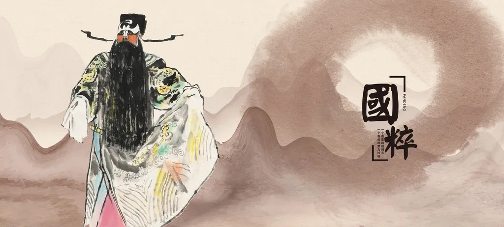
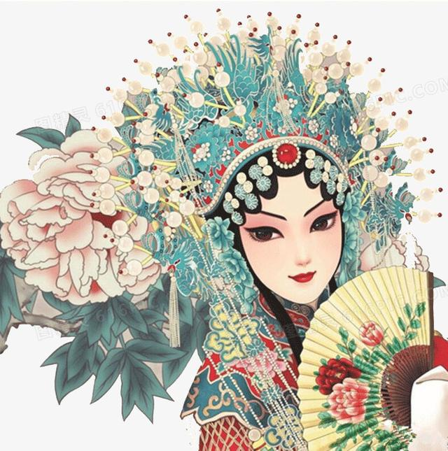
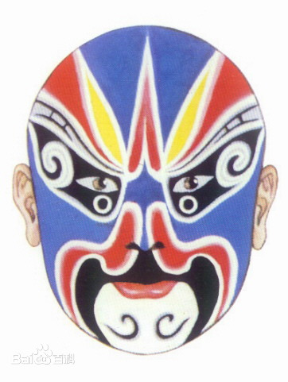

脸谱 （中国传统艺术）

角色详解:
脸谱，是中国传统戏曲演员脸上的绘画，用于舞台演出时的化妆造型艺术。不同行当的脸谱，情况不一。“生”、“旦”面部妆容简单，略施脂粉，叫“俊扮”、“素面”、“洁面”。而“净行”与“丑行”面部绘画比较复杂，特别是净，都是重施油彩的，图案复杂，因此称“花脸”。戏曲中的脸谱，主要指净的面部绘画。而“丑”，因其扮演戏剧角色，故在鼻梁上抹一小块白粉，俗称小花脸。
起源


经典介绍:
关于舞台脸谱的起源有几种说法，一种是源于我国南北朝北齐，兴盛于唐代的歌舞戏，也叫大面或代面，是为了歌颂兰陵王的战功和美德而做的男子独舞，说的是兰陵王高长恭，勇猛善战，貌若妇人，每次出战，均戴凶猛假面，屡屡得胜。人们为了歌颂兰陵王创造了男子独舞，也带面具。戏曲演员在舞台上勾画脸谱是用来助增所扮演人物的性格特点，相貌特征，身份地位，实现丰富的舞台色彩，美化舞台的效果，舞台脸谱是人们头脑中理念与观感的谐和统一。
京剧小常识-蓝色脸

表现性格刚直，桀骜不驯，如：《上天台》中的马武，《连环套》里的窦尔墩。
关注中国京剧艺术团